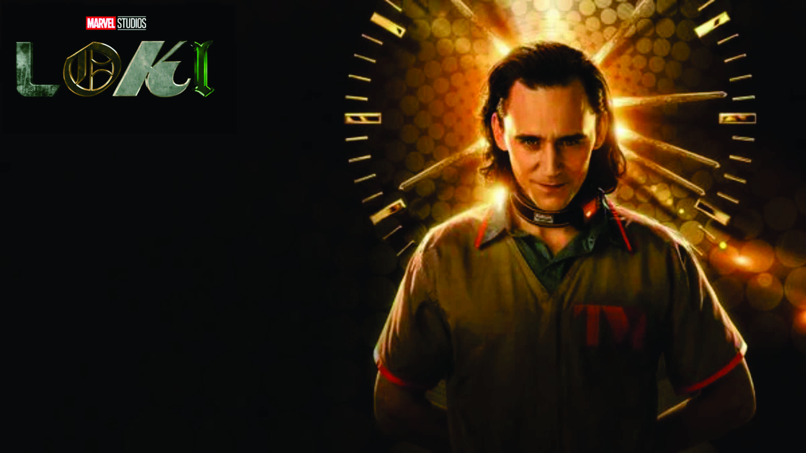
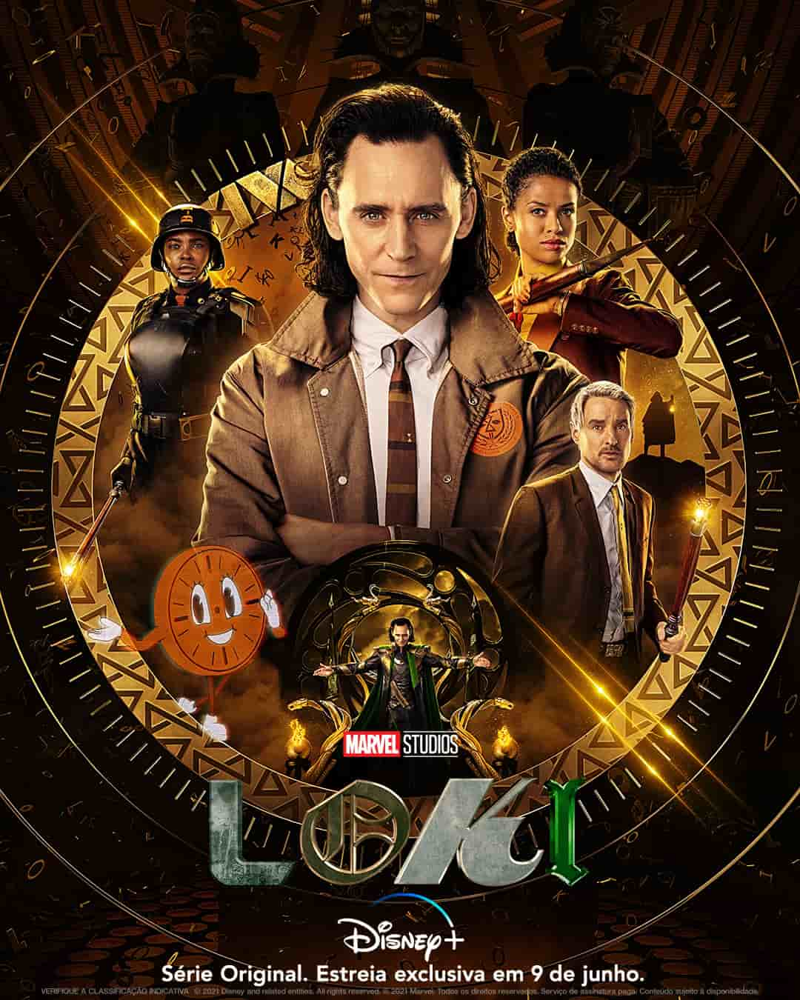

Loki é um deus da mitologia nórdica. É um deus da trapaça e da travessura e do fogo, também está ligado à magia e pode assumir a forma que quiser. Ele não pertence aos Aesir, embora viva com eles. É frequentemente considerado um símbolo da maldade, traiçoeiro, de pouca confiança; e, embora suas artimanhas geralmente causem problemas a curto prazo aos deuses, estes frequentemente se beneficiam, no fim, das travessuras de Loki. Ele está entre as figuras mais complexas da mitologia nórdica, o personagem pertence atualmente a Marvel Studius, que teve sua série própria 9 de junho de 2021

Baseada no famoso vilão do Universo Cinematográfico Marvel, Loki é uma série original do Disney+ que se passa após os eventos narrados em Vingadores: Ultimato. O spin-off segue os passos de Loki (Tom Hiddleston), mais conhecido como Deus da Trapaça, que conseguiu roubar o tesserato dos Vingadores durante a missão de recuperar as Joias do Infinito. Com o poder da gema do espaço, o Asgardiano começa a pular no tempo com a intenção de chegar a Midgard. Ao longo de sua jornada, ele acaba interferindo em momentos importantes da história da humanidade – seja para cumprir seus próprios objetivos, seja para se divertir um pouco. O que ele não sabe é que sua intervenção pode gerar uma catástrofe nas linhas do tempo e, assim, colocar em risco todo o universo.
Tom Hiddleston como Lokiː O irmão adotivo de Thor e deus da travessura baseado na divindade mitológica nórdica de mesmo nome. Esta é uma versão alternativa, a "variante do tempo" de Loki, que criou uma nova linha do tempo em Vingadores: Ultimato (2019) começando em 2012. Por causa disso, ele não passou pelos eventos de Thor: O Mundo Sombrio (2013) ou Thor: Ragnarok (2017) que reformou o personagem, anteriormente vilão, antes de sua morte em Vingadores: Guerra Infinita (2018). Michael Waldron comparou Loki ao cofundador da Apple Inc. Steve Jobs, uma vez que ambos foram adotados e adoram estar no controle. Hiddleston expressou interesse em retornar ao papel a fim de explorar os poderes de Loki, particularmente sua transformação, que atua na exploração da identidade em série. O sexo de Loki na série é denotado pela Autoridade de Variância Temporal como "fluido", referindo-se à fluidez de gênero do personagem na Marvel Comics que havia sido especulado anteriormente no UCM dada sua habilidade de metamorfose. Waldron disse estar ciente de quantas pessoas se identificam com a fluidez de gênero de Loki e estavam "ansiosos por essa representação". A série também revela Loki como bissexual, tornando-se o primeiro grande personagem "queer" no UCM. A série explora mais as habilidades mágicas de Loki, como sua telecinesia e rajadas de magia. Hiddleston também interpreta o Presidente Loki, outra variante de Loki que comanda um exército e está em conflito com Kid Loki. Hiddleston chamou o presidente Loki de "o pior do bando malvado", descrevendo-o como "o personagem menos vulnerável, mais autocrático e assustadoramente ambicioso que parece não ter empatia ou se importar com ninguém"
Loki foi criada por Michael Waldron e teve sua primeira temporada dirigida por Kate Herron. A série traz Hiddleston de volta como o deus da trapaça, trabalhando ao lado de sua variante feminina, Sylvie (Sophia Di Martino). Mbatha-Raw, Owen Wilson e Wunmi Mosaku também têm destaque na trama